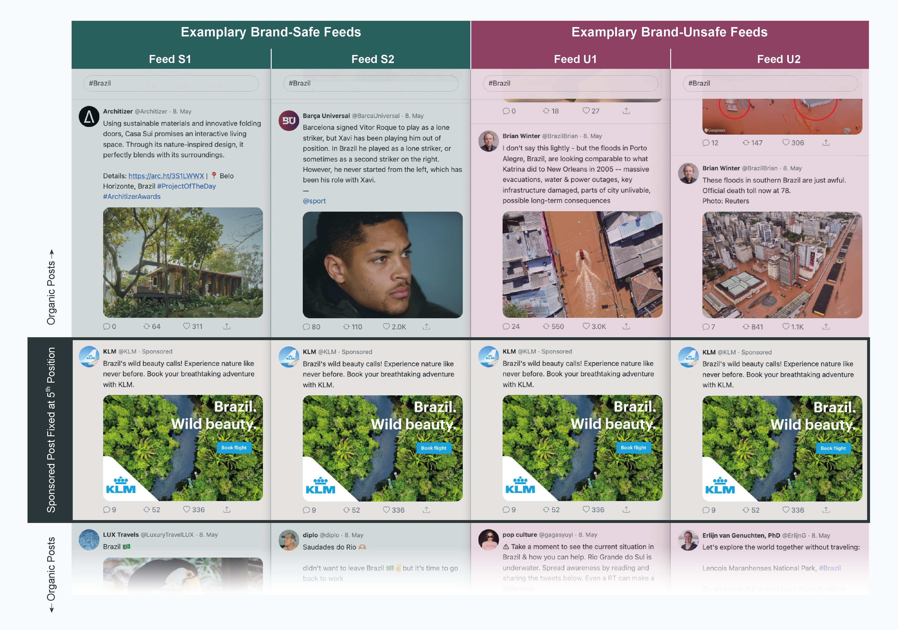
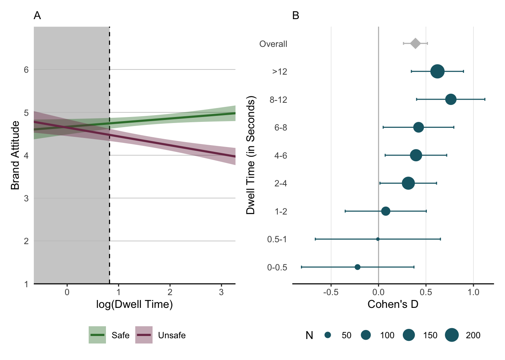
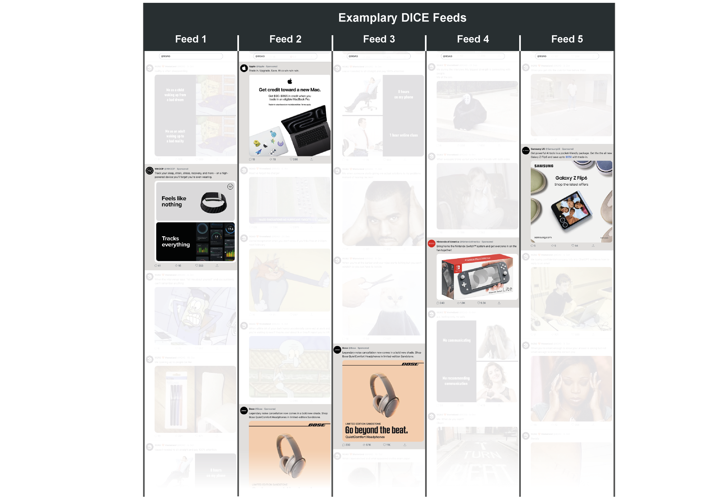
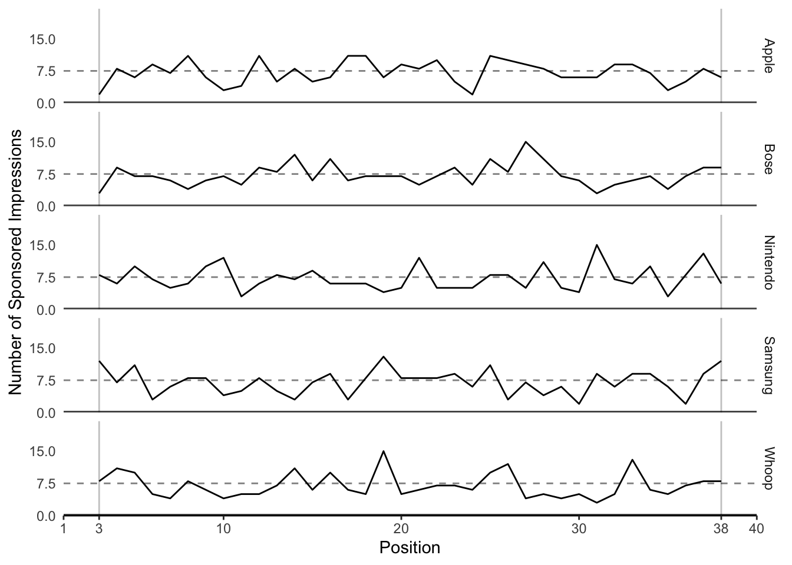
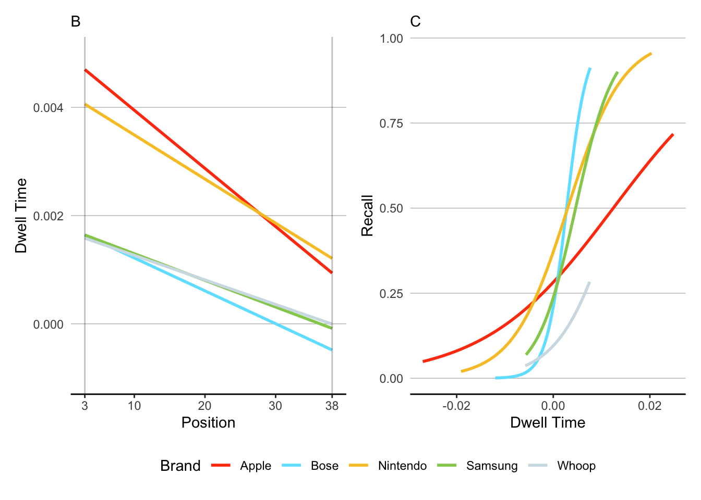

| doc_id | datetime | text | media | alt_text | likes | reposts | replies | username | handle | user_description | user_image | user_followers | sponsored | target | condition | sequence | commented_post | source |
|---|---|---|---|---|---|---|---|---|---|---|---|---|---|---|---|---|---|---|
| 5 | 08.05.24 09:30 | Brazil’s wild beauty calls! Experience nature like never before. Book your breathtaking adventure with KLM. | https://i.postimg.cc/MGQtKsh2/brazil-wild-beauty.webp | NA | 336 | 52 | 9 | KLM | KLM | Official global account of KLM. FAQ about flying from AMS: http://klmf.ly/Schiphol. To learn how we can assist you, please check: http://klmf.ly/ContactCentre. | https://pbs.twimg.com/profile_images/1807736403385561088/HaxXwA-t_400x400.jpg | 2223756 | 1 | https://www.klm.com.br/en-br/flights-from-brazil | appropriate | 5 | 0 | NA |
| 16 | 08.05.24 09:30 | Madonna shines in a custom Jean Paul Gaultier Haute Couture once again as she took the stage for her legendary grand finale for her ‘Celebration Tour’ in Brazil 💚 | https://pbs.twimg.com/media/GM5QxcZXMAA4nDR?format=jpg&name=large | NA | 17123 | 2123 | 117 | JPGaultier | Jean Paul Gaultier | Jean Paul Gaultier | https://pbs.twimg.com/profile_images/1780899814722473984/u02Lhtw4_400x400.jpg | 1423123 | 0 | NA | appropriate | NA | 0 | https://twitter.com/JPGaultier/status/1787455029789499619 |
| 17 | 08.05.24 09:30 | Waved Woodpecker (Celeus undatus) in Brazil 🐦🇧🇷 📷 Schuler Franz ©️ #Brazil #nature #wildlife #photography | https://pbs.twimg.com/media/GHOD_EjXkAACxmS?format=jpg&name=medium | NA | 1109 | 280 | 16 | Liberta Cherguia 🇪🇺 | MbarkCherguia | 🌳 Nature lover | 📸 Capturing nature’s beauty | Open to collaborations | Follow for stunning landscapes! 🌄 | Check out Geniustechw for art, tech & culture | https://pbs.twimg.com/profile_images/1748768033231798272/yx0DbMM4_400x400.jpg | 23249 | 0 | NA | appropriate | NA | 0 | https://twitter.com/MbarkCherguia/status/1761897016681017449 |
| 18 | 08.05.24 09:30 | Using sustainable materials and innovative folding doors, Casa Sui promises an interactive living space. Through its nature-inspired design, it perfectly blends with its surroundings. Details: https://arc.ht/3S1LWWX | 📍 Belo Horizonte, Brazil #ProjectOfTheDay #ArchitizerAwards | https://pbs.twimg.com/media/GEChwN4XQAA17mq?format=jpg&name=medium | NA | 311 | 64 | 0 | Architizer | Architizer | Architizer is the home of architectural inspiration. | https://pbs.twimg.com/profile_images/842415551955759109/om8egmBt_400x400.jpg | 1203859 | 0 | NA | appropriate | NA | 0 | https://twitter.com/Architizer/status/1747574513343025652 |
| 19 | 08.05.24 09:30 | The flora in Pará, Brazil, is essential for its economy, but preserving #biodiversity is equally important. Integrating it into value chains benefits the climate, people, and the economy. Learn more with this nature_org infographic! | https://pbs.twimg.com/media/GAvWidjb0AAMYMU?format=jpg&name=4096x4096 | NA | 142 | 60 | 3 | UN Biodiversity | UN Biodiversity | Official account of the Secretariat of the Convention on Biological Diversity. Our Acting Executive Secretary hdavidcooper | https://pbs.twimg.com/profile_images/1737083733147070464/irgdpyhW_400x400.jpg | 203847 | 0 | NA | appropriate | NA | 0 | https://twitter.com/UNBiodiversity/status/1735162703465890034 |
| 20 | 08.05.24 09:30 | Brazil overlaid onto Europe | https://pbs.twimg.com/media/GNCfMeJXUAAn61W?format=jpg&name=large | NA | 2899 | 333 | 37 | Epic Maps 🗺️ | Locati0ns | Educational and informative world Maps 🗺️. Scroll Down & Get More Knowledge. We do not own any content posted. Dm for removal/credit. | https://pbs.twimg.com/profile_images/1369972073758564355/nzPns41x_400x400.jpg | 850949 | 0 | NA | appropriate | NA | 0 | https://twitter.com/Locati0ns/status/1788104092574998635 |
| 21 | 08.05.24 09:30 | I don’t say this lightly - but the floods in Porto Alegre, Brazil, are looking comparable to what Katrina did to New Orleans in 2005 – massive evacuations, water & power outages, key infrastructure damaged, parts of city unlivable, possible long-term consequences | https://pbs.twimg.com/media/GNC-y3PWoAAGfil?format=jpg&name=900x900 | NA | 3020 | 550 | 24 | Brian Winter | BrazilBrian | Editor-in-chief AmerQuarterly. Latin American politics & barbecue. ““O mais brasileiro dos texanos.”” Opinions mine. | https://pbs.twimg.com/profile_images/1696273071898800128/Qc439vin_400x400.jpg | 71129 | 0 | NA | inappropriate | NA | 0 | https://twitter.com/BrazilBrian/status/1788140902067634491 |
| 22 | 08.05.24 09:30 | Sentinel-2 satellite imagery from earlier today shows the incredible extent of the historic flooding in Rio Grande do Sul, Brazil. Just terrible. | https://saltwire.imgix.net/2024/5/7/brazil-floods-death-toll-rises-to-90-dozens-still-stranded.jpg?cs=srgb&fit=crop&h=568&w=847&dpr=2&auto=enhance%2Cformat%2Ccompress | NA | 11239 | 34120 | 56 | Nahel Belgherze | WxNB_ | Covering extreme weather events around the world. Also interested in climate dynamics, geohazards & satellite remote sensing. Views are my own. | https://pbs.twimg.com/profile_images/1729266199496736768/ADI5Spzl_400x400.jpg | 51737 | 0 | NA | inappropriate | NA | 0 | https://twitter.com/WxNB_/status/1787616302737035457 |
| 23 | 08.05.24 09:30 | The sheer scale of the flooding in the metropolitan area of Porto Alegre, Brazil, which is home to over 4 million people, is hard to comprehend. Thousands of homes flooded, towns cut off, dozens killed, hundreds missing. | NA | NA | 2231 | 1415 | 51 | Nahel Belgherze | WxNB_ | Covering extreme weather events around the world. Also interested in climate dynamics, geohazards & satellite remote sensing. Views are my own. | https://pbs.twimg.com/profile_images/1729266199496736768/ADI5Spzl_400x400.jpg | 51737 | 0 | NA | inappropriate | NA | 0 | https://twitter.com/WxNB_/status/1787942289349783798 |
4 Case Studies
Two case studies illustrate the application of DICE. These studies are designed to replicate and expand classic context effects within a more ecologically valid social media feed environment using DICE. The focus of the case studies is to illustrate the usage and resulting data streams of DICE rather than advancing theory. This section aims to achieve two objectives. First, the studies demonstrate the ability to manipulate entire feed compositions and sequences, rather than just individual social media posts. Second, they demonstrate how post-level dwell time measurements can be used to approximate attention, complementing insights gained from traditional self-report measures. Substantively, Case Study 1 examines how content surrounding a sponsored post affects brand perceptions, while Case Study 2 explores how the specific position of a post within a feed influences attention and brand recall.
4.1 Case Study 1: Feed Composition and Context Effects
Case Study 1 demonstrates DICE’s capability to study context effects with high experimental control and study realism. This study illustrates how researchers can systematically manipulate the broader context (i.e., the composition of the feed) in which users encounter a specific post (in this case, a sponsored post from a brand). Substantively, Case Study 1 examines the issue of brand safety in social media advertising. Brand safety refers to the idea that advertising should not appear in contexts that could harm a brand’s reputation (Fournier and Srinivasan 2023). This concern is particularly relevant for social media advertising, where platforms use automated systems to place ads in dynamic, user-generated content environments. These systems often lack the nuanced understanding needed to identify potentially problematic contexts that could harm a brand. While industry reports suggest that up to 75% of brands have experienced such unsafe brand exposures (Ahmad et al. 2024; GumGum Inc. 2017), examining these effects in the field risks apparent brand damage.
4.1.1 Experimental Design
To test how brand (un)safe contexts affect brand perceptions, we created two social media feeds that were identical in structure but varied in their content surrounding a sponsored post (see Figure 4.11 for exemplary screenshots of the brand (un)safe feeds). The sponsored post in both conditions was an ad by the airline KLM promoting flights to Brazil.
In the brand-safe condition, the sponsored post was surrounded by actual organic posts covering Brazil scraped from the web. In the brand-unsafe condition, however, the sponsored post was surrounded by another set of scraped organic posts about the severe flooding that occurred during the time of the study. Such a situation is precisely the type of contextual mismatch that automated systems can create and managers fear due to the adverse consequences for brands (Ahmad et al. 2024; GumGum Inc. 2017). In both conditions, the sponsored post was always fixed in the fifth position, whereas the order of the organic posts varied randomly.

4.1.2 Procedure
We recruited 982 US-American participants on Prolific (\(M_{age} = 39\) years; 56% female) to participate in the study. Participants browsed the simulated feed on their own devices (75% desktop, 21% mobile, and 4% tablet). After scrolling through the feed, participants were redirected to a Qualtrics survey in which they first provided demographic information as a filler task. Next, participants reported their brand attitude toward KLM using three seven-point scales (1 = “Negative/Unfavorable/Dislike” and 7 = “Positive/Favorable/Like”; \(\alpha\) = 0.96). Finally, we assessed participants’ awareness of the Brazil flooding. For this and all studies, all stimuli, materials, data, and analysis code are available on the Open Science Framework (OSF): https://osf.io/2xs5c/?view_only=4bf95d2a2c8449218b5fa7cd288f626a.
4.1.3 Stimuli
Building on the CSV file structure introduced in Case Study 1, we created a file containing two distinct sets of content: nineteen organic posts for each experimental condition, plus one sponsored post that needed to appear in both feeds. To ensure the sponsored post would appear in both conditions while maintaining DICE’s CSV structure, we entered the sponsored post twice in the file - once for each condition. This resulted in a file with forty rows total: nineteen organic posts for each condition plus the sponsored post appearing twice. Each post’s content was specified in columns such as <text> and <username>. We used the <condition> parameter to distinguish between our brand-safebrand-unsafe feeds, assigning each row (i.e., each post) to its respective condition. Similar to Case Study 1, we left the <sequence> column empty for organic posts to enable randomization, with one key exception: the KLM sponsored post was assigned a fixed <sequence> value of “5” to ensure consistent positioning across conditions. We marked this post as sponsored using the <sponsored> parameter and included a KLM landing page URL in the <target> column for participants who clicked on the ad. The resulting CSV file was uploaded to an online repository to generate a URL for the DICE app.
Table 4.1 shows an excerpt of the exact CSV files we used to create the stimuli for this study. You can download that file here.
4.1.4 Participants and Randomization Checks
Participants were randomly assigned to view either the brand-safe feed (featuring general Brazil-related content) or the brand-unsafe feed (featuring flood coverage). A key advantage of DICE over observational and platform studies is its ability to implement true random assignment, allowing us to isolate the effect of context while canceling out other factors that might influence brand perception. To validate DICE’s randomization functionality, we examined the balance between treatment groups: as illustrated in Table 4.2, the two treatment groups do not exhibit differences in observables. Following Kerwin, Rostom, and Sterck (2024), we also found support for balanced conditions in an omnibus test of joint orthogonality with randomization inference (\(p=\) 0.39).
| Covariate | Safe | Unsafe | Difference | p-value |
|---|---|---|---|---|
| Mean Age (Years) | 38.848 | 38.522 | -0.326 | 0.702 |
| Female (Percent) | 58.439 | 54.262 | -4.177 | 0.194 |
4.1.5 Data
Our dataset comprises 955 participants and 15,343 observations at the participant \(\times\) post level. Whereas Case Study 1 analyzed multiple sponsored posts across participants, here we focus on a single sponsored post (i.e., the KLM ad) viewed by all participants, which simplifies our analytical approach. Our final sample comprises 955 observations on the participant level, which is slightly less than the expected one observation per participant due to connectivity issues: no dwell time data were recorded for around 0.00% of the sponsored posts.
This simplified “short” data structure has two convenient methodological implications. First, because we analyze one observation per participant rather than nested data, we can apply simpler methods such as ordinary least squares (OLS) regressions in our analyses. Second, because we only focus on one sponsored post, we do not need to divide our dwell time measure by the post’s height as we did in Case Study 1. Both aspects increase the interpretability of our results.
Table 4.3 shows an excerpt of the processed data to illustrate its nested (i.e., “long”) structure.
| Participant ID | Position in Feed | Likes | Replies | Seconds in Viewport | Dwell Time | Brand Attitudes | Age | Female | Desktop | Recall |
|---|---|---|---|---|---|---|---|---|---|---|
| 59e833e72f63d30001c8fb86 | 5 | FALSE | FALSE | 1.783 | 0.5782973 | 4.000000 | 36 | FALSE | TRUE | FALSE |
| 59f226a9d6380600018b2923 | 5 | FALSE | FALSE | 6.393 | 1.8552036 | 5.333333 | 60 | TRUE | TRUE | TRUE |
| 5a0ef93279f96a0001c73f25 | 5 | FALSE | FALSE | 3.500 | 1.2527630 | 4.000000 | 31 | TRUE | TRUE | FALSE |
| 5a42c80ddaea400001ac24e0 | 5 | FALSE | FALSE | 10.239 | 2.3262040 | 5.000000 | 47 | TRUE | TRUE | FALSE |
| 5a542b96e0cf3d0001260df1 | 5 | FALSE | FALSE | 1.111 | 0.1052605 | 4.000000 | 38 | TRUE | TRUE | FALSE |
| 5a5c2c2eeedc320001429df1 | 5 | FALSE | FALSE | 20.422 | 3.0166128 | 4.000000 | 33 | TRUE | TRUE | FALSE |
| 5a7618b18fe2dc0001057243 | 5 | FALSE | FALSE | 3.866 | 1.3522204 | 6.000000 | 43 | TRUE | TRUE | FALSE |
| 5a78e410ae9a0b0001a97274 | 5 | TRUE | FALSE | 5.915 | 1.7774915 | 6.000000 | 32 | TRUE | FALSE | FALSE |
| 5a91756d6475f900019f90f1 | 5 | FALSE | FALSE | 4.484 | 1.5005155 | 4.000000 | 43 | TRUE | FALSE | FALSE |
| 5a9fc2b66475f90001a0219a | 5 | FALSE | FALSE | 3.165 | 1.1521531 | 1.333333 | 31 | TRUE | TRUE | FALSE |
| 5aaf4b0ce1546900019b01de | 5 | FALSE | FALSE | 0.301 | -1.2006450 | 4.000000 | 43 | TRUE | TRUE | FALSE |
4.1.6 Results and Discussion
Brand attitudes toward KLM were significantly less positive in the brand-unsafe feed condition (\(M_u = 4.310\), \(SD_u = 1.366\)) compared to the brand-safe feed condition (\(M_s = 4.821\), \(SD_s = 1.161\), \(b = -.510\), \(SE = .082\), \(t(953) = -6.217\), \(p = .000\), \(d = .403\)).
To further explore the interplay between the KLM ad’s context and brand attitudes, we examined whether the dwell time of the ad moderated the previously reported main effect of context. An OLS regression revealed a statistically significant interaction between the context’s brand safety and dwell time (\(b = -.302\), \(SE = .068\), \(t(951) = -4.455\), \(p = .000\)), indicating that the lack of attention shapes how context affects brand attitudes (see Figure 4.2). This suggests that the negative effect of an unsafe context on brand attitude only emerged when participants spent a sufficient amount of time viewing the sponsored post. In contrast, among those participants with minimal dwell time, there was little difference in brand attitudes between safe and unsafe contexts. The main effects of brand safety (\(b = -.020\), \(SE = .137\), \(t(951) = -.143\), \(p = .886\)) and dwell time (\(b = .096\), \(SE = .050\), \(t(951) = 1.929\), \(p = .054\)) were not significant. The ad’s dwell time did not vary across brand safety conditions (\(b = -.002\), \(SE = .078\), \(t(953) = -4.662\), \(p = .982\)). Finally, this moderation is robust to alternative model specifications (see Section 4.1.7) where we repeated the same analysis while controlling for the dwell time allocated to all organic posts (\(b = -.316\), \(SE = .068\), \(t(950) = -4.662\), \(p = .000\)).

From a substantive perspective, the findings provide experimental support for brand safety concerns and reveal an intuitive nuance: contextual misplacements primarily harm brand perceptions when consumers pay sufficient attention to the content. When attention is minimal (indicated by minimal dwell times), the negative impact of unsafe contexts appears to be neutralized. From a methodological perspective, this study illustrates how researchers can manipulate entire feed compositions rather than just single social media posts. It also showcases how DICE’s dwell time data can be interpreted as a proxy of attention. A lack of dwell time for a post, however, implies a lack of attention to this content.
4.1.7 Robustness Checks
To test the robustness of our findings, we conducted additional analyses controlling for participants’ dwell time on organic posts that constituted our experimental manipulation. Since the brand safety manipulation involved varying the content of organic posts surrounding the sponsored ad (brand-safe vs. brand-unsafe), it was important to verify that our results were not simply driven by differential attention to these organic posts across conditions.
Models 1 and 2 in Table Table 4.4 feature the main findings reported in the manuscript. Model 3 adds the dwell time on all organic posts as a covariate, while Model 4 replaces the dwell time on the sponsored post with the dwell time on the organic posts. Both models demonstrate that our key findings (i.e., the main effects as well as the interaction between brand safety and dwell time) were robust. The interaction effect (Brand-Unsafe × Dwell Time KLM) remained significant, indicating that the moderating role of attention on context effects persists even after accounting for engagement with the manipulated organic content. Model 4 additionally shows that dwell time on organic posts also moderates the brand safety effect.
|
Model 1 |
Model 2 |
Model 3 |
Model 4 |
|||||||||
|---|---|---|---|---|---|---|---|---|---|---|---|---|
b |
SE 1 |
p |
b |
SE 1 |
p |
b |
SE 1 |
p |
b |
SE 1 |
p |
|
| Brand-Unsafe | -0.510 | 0.082 | <0.001 | -0.020 | 0.137 | 0.886 | -0.006 | 0.137 | 0.962 | 0.834 | 0.556 | 0.134 |
| Dwell Time (KLM) | 0.096 | 0.050 | 0.054 | 0.057 | 0.052 | 0.275 | ||||||
| Dwell Time (Organic) | 0.175 | 0.064 | 0.007 | 0.214 | 0.083 | 0.010 | ||||||
| Brand-Unsafe × Dwell Time (KLM) | -0.302 | 0.068 | <0.001 | -0.316 | 0.068 | <0.001 | ||||||
| Brand-Unsafe × Dwell Time (Organic) | -0.284 | 0.116 | 0.014 | |||||||||
| Constant | 4.821 | 0.058 | <0.001 | 4.664 | 0.099 | <0.001 | 3.901 | 0.297 | <0.001 | 3.810 | 0.395 | <0.001 |
| R² | 0.039 | 0.062 | 0.070 | 0.046 | ||||||||
| 1
SE = Standard Error |
||||||||||||
4.2 Case Study 2: Position Effects and Competing Attention Between Brands
Rather than focusing on a single post, Case Study 2 examines how multiple brands compete for user attention within the same feed—a common scenario in social media advertising where multiple advertisers target the same user and try to “cut through the clutter” of both organic content and competing ads (Ordenes et al. 2019). Case Study 2 also illustrates how to approximate attention patterns across an entire feed containing multiple sponsored posts from different advertisers in the same product category. By studying how users engage with multiple sponsored posts in a single feed, we can better understand the dynamics of attention allocation in social media environments where brands compete for attention simultaneously, building on related memory and context effects studied in traditional advertising environments (Pieters, Warlop, and Wedel 2002). Specifically, we examine how the position of sponsored posts affects brand recall when multiple brands are presented within the same feed, and how the dwell times captured through DICE help explain these effects.
4.2.1 Experimental Design
To investigate the relationship between ad placement and recall, we simulated social media feeds containing both organic and sponsored posts. Whereas the set of organic and sponsored posts was the same for all participants, the sequence in which the participants were exposed to these posts was unique for every participant as we randomized the sequence between subjects.
To investigate the relationship between ad placement and brand recall, we simulated a social media feed containing both organic and sponsored posts. Whereas the set of organic and sponsored posts was the same for all participants, we randomized the sequence in which participants were exposed to these posts between subjects.
The feed featured thirty-five organic posts and five consumer electronics ads (sponsored posts; see Figure 4.32 for example feeds). We selected multiple ads from established consumer electronics brands (i.e., Apple, Bose, Nintendo, Samsung, Whoop).3 The sponsored posts were actual ads retrieved from Facebook’s Ad Library, a publicly accessible database that archives advertisements run by advertisers across Meta’s platforms. The selected sponsored posts shared similar basic characteristics, including the presence of a product image, brand logo, and brief text as part of the advertisement. The organic content featured a collection of memes taken from the platform 9gag, a popular internet meme collection with over sixteen million followers on X. We intentionally chose memes as organic content to offer a conservative test of how branded content “competes” for attention on social media, particularly among younger users (Malodia et al. 2022).

4.2.2 Procedure
We recruited 300 younger American participants from Prolific (\(M_{age}\)=29.42 years; 53% female). Participants browsed the simulated feed on their own devices (72% desktop, 25% mobile, and 3% tablet). After scrolling through the feed, we redirected participants to a Qualtrics survey in which participants first provided demographic information as a filler task. Next, we measured whether participants recalled seeing the ads by the five brands in the feed. Specifically, we measured both free and cued recall. To measure cued recall, we showed participants a list of twenty brands from different categories and asked them to indicate whether they recalled seeing them (Campbell and Keller 2003; Simonov, Valletti, and Veiga 2025), including a no-recall option. The results for both recall measures were highly consistent; we report the cued recall results in the manuscript for parsimony (the results for unaided recall are reported in Section 4.2.7.1).
4.2.3 Stimuli
We next illustrate how we configured the feed to match our experimental design. Specifically, we created a CSV file that contains forty rows where each row represents one unique post. To guarantee that the order in which the posts were displayed was randomized between participants, we left the <sequence> column empty. Whenever the DICE app encounters missing values in that column, it assigns random numbers to that cell. Hence, leaving some, or in our case, all cells of this column empty, leads to random numbers and thus, random sequences in which the posts are displayed. Next, we specified the Boolean <sponsored> column and assigned a 0 to all thirty-five organic posts and a 1 to the five sponsored posts. For these sponsored posts, we also specified a <target> which is the URL of landing page participants are directed to if they click on the corresponding sponsored post. As a final step, we uploaded the CSV file to an online repository to create a URL that can be passed to DICE’s web app.
Table 4.1 shows an excerpt of the exact CSV files we used to create the stimuli for this study. You can download that file here.
| doc_id | datetime | text | media | alt_text | likes | reposts | replies | username | handle | user_description | user_image | user_followers | commented_post | sponsored | target | condition | sequence | source |
|---|---|---|---|---|---|---|---|---|---|---|---|---|---|---|---|---|---|---|
| 34 | 20.09.24 12:01 | Dental receptionist when you don’t know if you’ll be free at 2:30pm next February | https://pbs.twimg.com/media/GX3wITOX0AAEyhO?format=jpg&name=4096x4096 | NA | 247 | 21 | 15 | 9GAG ❤️ Memeland | 9GAG | Building MEMELAND one meme at a time • 📧 9gag9gag.com • CEO ➡️ 9gagceo. | https://pbs.twimg.com/profile_images/1695636573294125056/Jj9IWW10_400x400.jpg | 16812312 | 0 | 0 | NA | A | NA | https://twitter.com/9GAG/status/1836888251941998992 |
| 35 | 19.09.24 06:01 | Me: sends “Good morning” text Also me: sleeps again | https://pbs.twimg.com/media/GXz48AYXMAA4-Wm?format=jpg&name=medium | NA | 475 | 118 | 19 | 9GAG ❤️ Memeland | 9GAG | Building MEMELAND one meme at a time • 📧 9gag9gag.com • CEO ➡️ 9gagceo. | https://pbs.twimg.com/profile_images/1695636573294125056/Jj9IWW10_400x400.jpg | 16812312 | 0 | 0 | NA | A | NA | https://twitter.com/9GAG/status/1836616460271030578 |
| 36 | 09.10.24 01:00 | Trade in. Upgrade. Save. It’s a win-win-win. | https://scontent-ham3-1.xx.fbcdn.net/v/t39.35426-6/462218991_2262824920752352_7170739144707876726_n.jpg?stp=dst-jpg_s600x600&_nc_cat=105&ccb=1-7&_nc_sid=c53f8f&_nc_ohc=8iy6cVBWpdsQ7kNvgG2iyBj&_nc_ht=scontent-ham3-1.xx&_nc_gid=Au5_Py3fxlUQdue1avtqNle&oh=00_AYAy5jqXGlkDzj6L1-hJD-AJ_RXQKg_afDs2aZ1kBcV–g&oe=670E8B8A | NA | 396 | 78 | 19 | Apple | Apple | Apple.com | https://substackcdn.com/image/fetch/f_auto,q_auto:good,fl_progressive:steep/https%3A%2F%2Fsubstack-post-media.s3.amazonaws.com%2Fpublic%2Fimages%2F8ed3d547-94ff-48e1-9f20-8c14a7030a02_2000x2000.jpeg | 9712532 | 0 | 1 | https://www.apple.com/shop/buy-mac/macbook-pro/16-inch?cid=wwa-us-soc-mac-macdt-socl-rbwfm-staf-infe-cpc-mos-mobtab-amact-gnt-broa-bnlp-lfnnl-usen-sngl-static-11ar-ban-macpro-trdn-rnge-buy-na-na-na-04807071 | A | NA | https://www.facebook.com/ads/library/?active_status=active&ad_type=all&country=DE&id=513634761464978&media_type=all&search_type=page&view_all_page_id=434174436675167 |
| 37 | 10.10.24 01:00 | Track your sleep, strain, stress, recovery, and more – on a high-powered device you’ll forget you’re even wearing. | https://scontent-ham3-1.xx.fbcdn.net/v/t39.35426-6/456453687_1497228568338575_3460451067821947560_n.jpg?stp=dst-jpg_s600x600&_nc_cat=108&ccb=1-7&_nc_sid=c53f8f&_nc_ohc=s0zq2rnJIbYQ7kNvgEA5dEc&_nc_ht=scontent-ham3-1.xx&_nc_gid=Ar8I66iuX4byWiPP-Wa2iZK&oh=00_AYAcfU0N2dPWf9iX1J78Z0qw-uFC0KjQS7_Si_G21NRDmg&oe=670EA829 | NA | 203 | 16 | 41 | WHOOP | WHOOP | Your wearable health & fitness coach on a mission to unlock human performance. Join now and shop our latest styles 👇 | https://cdn-1.webcatalog.io/catalog/whoop/whoop-icon-filled-256.png?v=1727793667542 | 98445 | 0 | 1 | https://www.whoop.com/ | A | NA | https://www.facebook.com/ads/library/?active_status=active&ad_type=all&country=DE&id=884008727118967&media_type=all&search_type=page&view_all_page_id=314298918730028 |
| 38 | 11.10.24 01:00 | Get powerful AI tools in a pocket-friendly package. Get the the all new Galaxy Z Flip6 and save up to $650 with trade-in. | https://scontent-ham3-1.xx.fbcdn.net/v/t39.35426-6/461785311_849420040637530_4189807201330104983_n.jpg?stp=dst-jpg_s600x600&_nc_cat=109&ccb=1-7&_nc_sid=c53f8f&_nc_ohc=_zSkXBev5O8Q7kNvgGd-3-L&_nc_ht=scontent-ham3-1.xx&_nc_gid=A6T__p18PiafwzhxKZvMoiE&oh=00_AYCfhZS2xVPfuYEfNUttcHbnivX2017oazxDp4SLd_bEng&oe=670E9DD7 | NA | 44 | 5 | 5 | Samsung US | SamsungUS | Official Twitter of Samsung USA. | https://i.pinimg.com/originals/74/79/a0/7479a0a02cf333e01e13d1b6d08af800.jpg | 75937 | 0 | 1 | https://www.samsung.com/us/smartphones/galaxy-z-flip6/buy/galaxy-z-flip6-512gb-unlocked-sm-f741uakexaa/ | A | NA | https://www.facebook.com/ads/library/?active_status=active&ad_type=all&country=DE&id=800744292023909&media_type=all&search_type=page&view_all_page_id=7224956785 |
| 39 | 12.10.24 01:00 | Bring home the Nintendo Switch™ system and get everyone in on the fun together! | https://scontent-ham3-1.xx.fbcdn.net/v/t39.35426-6/461833323_1598276837567833_385467090264512800_n.jpg?stp=dst-jpg_s600x600&_nc_cat=108&ccb=1-7&_nc_sid=c53f8f&_nc_ohc=Yld5Mu9Ls54Q7kNvgGlM207&_nc_ht=scontent-ham3-1.xx&_nc_gid=AGzr0CP_zIG-20aQne5-Az6&oh=00_AYDry9MlNds6mS_mzOBiFatTpHy9qdqDPTMda84KJy3Gjw&oe=670E8CA6 | NA | 9339 | 1903 | 240 | Nintendo of America | NintendoAmerica | Welcome to the official Nintendo profile for gaming news! We’re listening, too. For ESRB ratings go to http://esrb.org | https://pbs.twimg.com/profile_images/1539293929031421958/cy-uzR2t_400x400.jpg | 13948183 | 0 | 1 | https://www.nintendo.com/us/store/products/nintendo-switch-lite-gray/ | A | NA | https://www.facebook.com/ads/library/?active_status=active&ad_type=all&country=DE&id=1053573702629422&media_type=all&search_type=page&view_all_page_id=1125429570886433 |
| 40 | 13.10.24 01:00 | Legendary noise cancellation now comes in a bold new shade. Shop Bose QuietComfort Headphones in limited-edition Sandstone. | https://scontent-ham3-1.xx.fbcdn.net/v/t39.35426-6/449312743_2744495332380149_827947157860749378_n.jpg?stp=dst-jpg_s600x600&_nc_cat=102&ccb=1-7&_nc_sid=c53f8f&nc_ohc=RZ2kDljucacQ7kNvgE-0db&_nc_ht=scontent-ham3-1.xx&_nc_gid=AVwJcHYfDMnOHYjQepUXZCO&oh=00_AYAFyDp3EHj3Gk_H1z_ApTeyOJuRPDKNMZ6XvR4slUC5qw&oe=670EB46D | NA | 11039 | 6099 | 230 | Bose | Bose | Sound Is Power. For support, follow BoseService. | https://logodownload.org/wp-content/uploads/2019/07/bose-logo-3.png | 2339194 | 0 | 1 | https://www.bose.com/p/noise-cancelling-headphones/quietcomfort-acoustic-noise-cancelling-headphones/QC-HEADPHONEARN.html | A | NA | https://www.facebook.com/ads/library/?id=471047825791376 |
4.2.4 Data and Randomization Checks
4.2.4.1 Final Sample
Our dataset comprises 300 participants and 10,377 observations at the participant \(\times\) post level. In our analyses, we only focus on sponsored posts which is why our final sample comprises 1,283 observations on the participant \(\times\) sponsored post level. This is less than the expected five observations per participant due to two reasons. First, due to connectivity issues: no dwell time data were recorded for around 3.67% of individual–sponsored post pairs. Second, we excluded the first and last two posts of each feed (i.e., \(300 \times 4\) observations) from our analysis, as meaningful dwell times couldn’t be determined for these. This is because participants were familiarizing themselves with the interface at the start and deciding whether to proceed to the next stage of the study at the end of the feeds.
4.2.4.2 Variables
Position in feed (subsequently referred to only as “position”) is our main independent variable. Because we randomized the order in which the content appeared (i.e., position acts as a within-subject factor) and because we excluded observations positioned at the beginning and the end of the feed, we observe a sample mean of 20.58 as well as a minimum and maximum of 3 and 38, respectively. As, we randomly manipulated the position in which each post was displayed exogenously between subjects, each sequence in which participants browsed through ads was unique.

In Figure 4.4, each line represents the number of times a sponsored post for a specific brand appeared at each position across all participants. As the placements were fully randomized, we observed some random variability that naturally fluctuates around the expected value of 7.5 impressions per position (as indicated by dashed lines).4 Taken together, this suggests that randomization within the DICE app was effective.
We measured dwell times as the number of seconds at least 50 percent of a post’s pixels were visible on screen. We log-transformed the raw dwell times to reduce skewness. Unlike Case Study 2, where we focused on a single post (i.e., the KLM ad), the focal posts of interest (i.e., ads) in this Case Study vary in their post height. Thus, and as described in the “Behavioral Data” section of the DICE App Implementation, we normalized our dwell time measure by dividing it by post height to control for differently sized posts (i.e., the height in pixels of the corresponding sponsored post on a participant’s screen).
We also tracked actual reactions to the content such as likes and replies to individual posts. In the full sample featuring both organic and sponsored posts, we observed 144 (30) participants who liked (replied to) any post in the feed. These numbers are obviously lower for sponsored posts (ads shown in the feed) with 32 (4) participants liked (replied to) at least one sponsored post or ad. Given the low incident rate, we did not analyze these likes and comments any further.
Table 4.6 shows an excerpt of the processed data to illustrate its nested (i.e., “long”) structure.
| Participant ID | Post ID | Sponsored Post | Brand | Position in Feed | Likes | Replies | Seconds in Viewport | log(Seconds in Viewport) | Post Height | Dwell Time | Age | Female | Desktop | Recall Apple | Recall Bose | Recall Nintendo | Recall Samsung | Recall Whoop |
|---|---|---|---|---|---|---|---|---|---|---|---|---|---|---|---|---|---|---|
| 66ee9436fdc916ec83068569 | 14 | FALSE | NA | 35 | FALSE | FALSE | 0.083 | -2.4889147 | 383 | -0.0064985 | 33 | TRUE | FALSE | TRUE | FALSE | FALSE | FALSE | FALSE |
| 66ee9436fdc916ec83068569 | 13 | FALSE | NA | 36 | FALSE | FALSE | 0.117 | -2.1455813 | 420 | -0.0051085 | 33 | TRUE | FALSE | TRUE | FALSE | FALSE | FALSE | FALSE |
| 66ee9436fdc916ec83068569 | 18 | FALSE | NA | 37 | FALSE | FALSE | 0.150 | -1.8971200 | 416 | -0.0045604 | 33 | TRUE | FALSE | TRUE | FALSE | FALSE | FALSE | FALSE |
| 66ee9436fdc916ec83068569 | 30 | FALSE | NA | 38 | FALSE | FALSE | 0.167 | -1.7897615 | 402 | -0.0044521 | 33 | TRUE | FALSE | TRUE | FALSE | FALSE | FALSE | FALSE |
| 66ee9436fdc916ec83068569 | 19 | FALSE | NA | 39 | FALSE | FALSE | 0.234 | -1.4524342 | 388 | -0.0037434 | 33 | TRUE | FALSE | TRUE | FALSE | FALSE | FALSE | FALSE |
| 66ee9436fdc916ec83068569 | 34 | FALSE | NA | 40 | FALSE | FALSE | 2.705 | 0.9951019 | 385 | 0.0025847 | 33 | TRUE | FALSE | TRUE | FALSE | FALSE | FALSE | FALSE |
| 66f043f0c38f7c2ec60770e4 | 3 | FALSE | NA | 1 | FALSE | FALSE | 4.614 | 1.5290952 | 622 | 0.0024584 | 30 | TRUE | TRUE | FALSE | FALSE | FALSE | FALSE | FALSE |
| 66f043f0c38f7c2ec60770e4 | 24 | FALSE | NA | 2 | FALSE | FALSE | 0.376 | -0.9781661 | 507 | -0.0019293 | 30 | TRUE | TRUE | FALSE | FALSE | FALSE | FALSE | FALSE |
| 66f043f0c38f7c2ec60770e4 | 4 | FALSE | NA | 3 | FALSE | FALSE | 1.042 | 0.0411419 | 512 | 0.0000804 | 30 | TRUE | TRUE | FALSE | FALSE | FALSE | FALSE | FALSE |
| 66f043f0c38f7c2ec60770e4 | 36 | TRUE | Apple | 4 | FALSE | FALSE | 0.180 | -1.7147984 | 622 | -0.0027569 | 30 | TRUE | TRUE | FALSE | FALSE | FALSE | FALSE | FALSE |
| 66f043f0c38f7c2ec60770e4 | 37 | TRUE | Whoop | 5 | FALSE | FALSE | 0.382 | -0.9623347 | 646 | -0.0014897 | 30 | TRUE | TRUE | FALSE | FALSE | FALSE | FALSE | FALSE |
4.2.5 Empirical Model
To estimate the impact of ad positioning on brand recall in social media feeds, we employed a mixed-effects logistic regression model with brand fixed effects to account for the binary nature of recall outcome (recalled vs. not recalled) while considering the hierarchical structure of our data: multiple observations nested within participants and ads. We assume a binomial distribution as each observation represents a single trial with two possible outcomes (recalled vs. not recalled), where \(p_{ij}\) represents the probability of participant \(i\) recalling brand \(j\):
\[ \text{recall}_{ij} \sim \text{Binomial}(1, p_{ij}) \]
We estimated the effect of ad positioning on recall and captured between-participant heterogeneity through random intercepts while controlling for brand fixed effects:
\[ \text{logit}(p_{ij}) = a + a_i + \mathbf{x}_{ij} \mathbf{b} + \sum_{j=1}^{J-1} \gamma_j \text{Brand}_j \]
where \(a\) is the global intercept, \(a_i\) is the participant-specific random intercept, \(\mathbf{x}_{ij}\) is a vector of continuous predictors (e.g., position and dwell time) with corresponding coefficient vector \(\mathbf{b}\), and \(\gamma_j\) represents the fixed effects for each brand \(j\) (with Apple serving as the reference category). The random participant effects \(a_i\) follows from our experimental design, given that the random assignment of ad positions ensures zero correlation between participant characteristics and the explanatory variables. Brand effects are treated as fixed parameters rather than random effects, allowing for potential correlation between brand characteristics and positioning.
The random participant effects \(a_i\) follows from our experimental design, given that the random assignment of ad positions ensures zero correlation between participant characteristics and the explanatory variables. Brand effects are treated as fixed parameters rather than random effects, allowing for potential correlation between brand characteristics and core explanatory variables such as dwell time.
Finally, for better comparability between models, we z-standardized all explanatory variables. The regression coefficients effects on the dependent variable are therefore quantified in standard deviations. This allowed us to compare the relative effect sizes between regression models. Because of the logit link, the odds ratio is \(100 \times (e^{\beta} - 1)\), which gives the percentage change in the odds of recall.
4.2.6 Results and Discussion
The effect of position on recall was significant and negative (\(\beta_1\) = -.207, SE = .070, z = -2.955, p = .003; see Model 1 in Table 4.7), suggesting a primacy effect such that the further up (down) an ad is displayed in a feed, the more (less) participants recall seeing the ad. We also examined potential non-linear effects of position (i.e., to assess whether especially the beginning and end of a feed promote ad recall) by adding a quadratic term, but found no statistically significant effect. These results are robust to alternative model specifications, using uncued recall (instead of cued recall) as our dependent variable (see Section 4.2.7.1).
As shown in Model 2 in Table 4.7, the post-level dwell time of a user significantly predicts ad recall (\(\beta_3\) = .714, SE = .091, z = 7.832, p = .000). More importantly, we also found that the dwell time allocated to an ad was a stronger predictor of recall than the position of the ad in the feed. Specifically, Model 3, including both position and dwell time, shows that the effect of position becomes non-significant (\(\beta_1\) = -.104, SE = .072, z = -1.434, p = .152), while the dwell time coefficient remains unchanged and significant (\(\beta_3\) = .694, SE = .092, z = 7.550, p = .000). The minimal change in the Akaike information criterion when adding the position coefficients between Model 2 and Model 3 suggests that including ad position does not improve the model’s fit to the data. A subsequent 1-1-1 hierarchical mediation analysis (Zhang, Zyphur, and Preacher 2008) indeed supports that post-level dwell time significantly mediates the relationship between ad position and recall (\(a \times b = -.019\), 95% CI = [-.026, -.013], proportion mediated = .546, 95% CI = [.301, 1.555], p = .000). Section 4.2.7.2 reports additional analyses that suggest limited heterogeneity in these patterns across different sponsored posts. While brands may differ in their baseline dwell times due to potential familiarity differences, dwell time consistently predicts recall across brands.
|
Model 1 |
Model 2 |
Model 3 |
|||||||
|---|---|---|---|---|---|---|---|---|---|
beta 1 |
SE 1 |
p |
beta 1 |
SE 1 |
p |
beta 1 |
SE 1 |
p |
|
| (Intercept) | -0.821 | 0.170 | <0.001 | -1.118 | 0.172 | <0.001 | -1.082 | 0.186 | <0.001 |
| Position | -0.207 | 0.070 | 0.003 | -0.104 | 0.072 | 0.152 | |||
| Position² | 0.028 | 0.077 | 0.719 | -0.029 | 0.079 | 0.710 | |||
| Dwell Time | 0.714 | 0.091 | <0.001 | 0.694 | 0.092 | <0.001 | |||
| AIC | 1,476 | 1,405 | 1,407 | ||||||
| 1
OR = Odds Ratio, SE = Standard Error |
|||||||||
From a substantive perspective, the findings demonstrate how memory formation operates when brands compete for limited attention in a social media environment, consistent with prior work on attention and memory under competitive exposure (Pieters, Warlop, and Wedel 2002). From a more methodological perspective, Case Study 2 demonstrates how to combine the behavioral data (i.e., post-level dwell time as a proxy of attention) with self-reports from conventional survey measures (e.g., recall of branded content).
4.2.7 Robustness Checks
4.2.7.1 Uncued Recall
Here, we reproduce Table 4.7 using uncued (or “free”) instead of cued recall as our dependent variable, using the same empirical strategy as before.
Table 4.8 reproduces these findings and shows that they are robust to this alternative model specification: we still observe a primacy effect in out naïve Model 1 that vanishes as we control for dwell time in Model 3.
The effect of position on uncued recall was significant and negative (\(\beta_1\) = -.180, SE = .075, z = -2.409, p = .016; see Model 1 in Table 4.8), suggesting a primacy effect such that the further up (down) an ad is displayed in a feed, the more (less) participants recall seeing the ad. We also examined potential non-linear effects of position (i.e., to assess whether especially the beginning and end of a feed promote uncued ad recall) by adding a quadratic term, but found no statistically significant effect.
As shown in Model 2 in Table 4.8, the post-level dwell time of a user significantly predicts uncued recall (\(\beta_3\) = .596, SE = .090, z = 6.589, p = .000). More importantly, we also found that the dwell time allocated to an ad was a stronger predictor of uncued recall than the position of the ad in the feed. Specifically, Model 3, including both position and dwell time, shows that the effect of position becomes non-significant (\(\beta_1\) = -.095, SE = .078, z = -1.221, p = .222), while the dwell time coefficient remains unchanged and significant (\(\beta_3\) = .579, SE = .091, z = 6.348, p = .000). The minimal change in the Akaike information criterion when adding the position coefficients between Model 2 and Model 3 suggests that including ad position does not improve the model’s fit to the data. A subsequent 1-1-1 hierarchical mediation analysis (Zhang, Zyphur, and Preacher 2008) indeed supports that post-level dwell time significantly mediates the relationship between ad position and uncued recall (\(a \times b = -.014\), 95% CI = [-.019, -.009], proportion mediated = .515, 95% CI = [.243, 1.684], p = .016).
|
Model 1 |
Model 2 |
Model 3 |
|||||||
|---|---|---|---|---|---|---|---|---|---|
beta 1 |
SE 1 |
p |
beta 1 |
SE 1 |
p |
beta 1 |
SE 1 |
p |
|
| (Intercept) | -1.188 | 0.179 | <0.001 | -1.473 | 0.183 | <0.001 | -1.454 | 0.199 | <0.001 |
| Position | -0.180 | 0.075 | 0.016 | -0.095 | 0.078 | 0.222 | |||
| Position² | 0.033 | 0.082 | 0.690 | -0.013 | 0.085 | 0.873 | |||
| Dwell Time | 0.596 | 0.090 | <0.001 | 0.579 | 0.091 | <0.001 | |||
| AIC | 1,274 | 1,225 | 1,227 | ||||||
| 1
OR = Odds Ratio, SE = Standard Error |
|||||||||
4.2.7.2 Ad Position, Dwell Time, and Recall Across Brands
Ad recall significantly varied across brands. Figure 4.5 (Panel A) visualizes the relationship between dwell time and position across the five brands in our study. We observe a consistent negative relationship between position and dwell time across all brands, with posts placed later in the feed receiving less attention.

However, we also find that Apple and Nintendo generated significantly higher dwell time than all other brands (see the parallel upward shift of the regression line compared to Bose, Samsung, and Whoop). Panel B further shows how dwell time predicts recall probability consistently across all brands. The positive slope of all curves in Panel B indicates that increased dwell time enhances recall probability across all brands consistently, even for less familiar brands like Whoop. This suggests that while brands may differ in their baseline dwell time due to potential familiarity differences, we find a highly consistent empirical regularity of how dwell time ultimately predicts recall.
The figure shows how DICE enables the controlled manipulation of feed contexts. The identical sponsored post by KLM (highlighted) appears in the “brand-safe” feeds (left) surrounded by neutral Brazil content versus “brand-unsafe” feeds (right) where it appears alongside posts about the Brazil flooding disaster. The sponsored post always remains in the fifth position, while surrounding organic posts are fully randomized. An example feed for the brand-unsafe condition is accessible at https://tiny.cc/DICE1 .↩︎
The figure displays five exemplary feeds used in Case Study 2. The positioning of sponsored and organic content in the study was fully randomized. The sponsored posts are highlighted for expositional clarity. Each feed contained identical content: the same thirty-five organic posts and five sponsored posts, as shown in the second column, where both the BOSE and Apple ads are displayed. An example feed is accessible at https://tiny.cc/DICE2.↩︎
This approach aligns with recent methodological work on stimulus sampling (Simonsohn, Montealegre, and Evangelidis 2024) which demonstrates that in studies focused on a single manipulated variable (a sponsored post’s position in our case), using diverse stimuli helps ensure effects are not driven by idiosyncratic characteristics of any particular advertisement, increasing both internal and ecological validity.↩︎
This expectation is based on each of the 5 sponsored posts being shown once per participant (N=300) in a feed of 40 positions, leading to an average of \(\frac{300}{40} = 7.5\) for each brand’s ad placement across all positions.↩︎